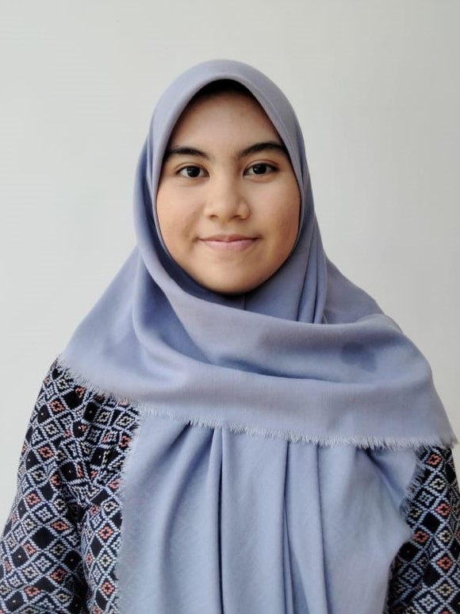

Shafa Nabilah Hanin
shafanabilah1005@gmail.com

About
Enrollment Year
2021
Education
Sepuluh Nopember Institute of Technology
More about me
I'am an undergraduate student majoring in the Department of Informatics. Currently, I have an interest in pursuing career path as a data scientist. I have some relevant experiences in data processing. Adept at working collaboratively in cross-functional teams and adapting to evolving industry landscapes. Committed to continuous learning and professional growth.
Experience
Skills
Education